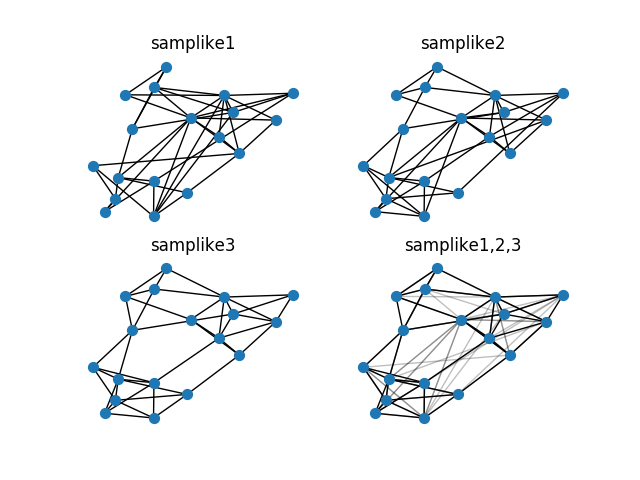

Note
Click here to download the full example code
Sampson¶
Sampson’s monastery data.
Shows how to read data from a zip file and plot multiple frames.
# Author: Aric Hagberg (hagberg@lanl.gov)
# Copyright (C) 2010-2019 by
# Aric Hagberg <hagberg@lanl.gov>
# Dan Schult <dschult@colgate.edu>
# Pieter Swart <swart@lanl.gov>
# All rights reserved.
# BSD license.
import zipfile
try:
from cStringIO import StringIO
except ImportError:
from io import BytesIO as StringIO
import matplotlib.pyplot as plt
import networkx as nx
zf = zipfile.ZipFile('sampson_data.zip') # zipfile object
e1 = StringIO(zf.read('samplike1.txt')) # read info file
e2 = StringIO(zf.read('samplike2.txt')) # read info file
e3 = StringIO(zf.read('samplike3.txt')) # read info file
G1 = nx.read_edgelist(e1, delimiter='\t')
G2 = nx.read_edgelist(e2, delimiter='\t')
G3 = nx.read_edgelist(e3, delimiter='\t')
pos = nx.spring_layout(G3, iterations=100)
plt.clf()
plt.subplot(221)
plt.title('samplike1')
nx.draw(G1, pos, node_size=50, with_labels=False)
plt.subplot(222)
plt.title('samplike2')
nx.draw(G2, pos, node_size=50, with_labels=False)
plt.subplot(223)
plt.title('samplike3')
nx.draw(G3, pos, node_size=50, with_labels=False)
plt.subplot(224)
plt.title('samplike1,2,3')
nx.draw(G3, pos, edgelist=list(G3.edges()), node_size=50, with_labels=False)
nx.draw_networkx_edges(G1, pos, alpha=0.25)
nx.draw_networkx_edges(G2, pos, alpha=0.25)
plt.show()
Total running time of the script: ( 0 minutes 0.328 seconds)